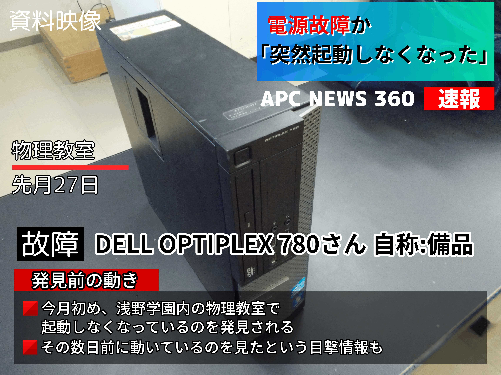
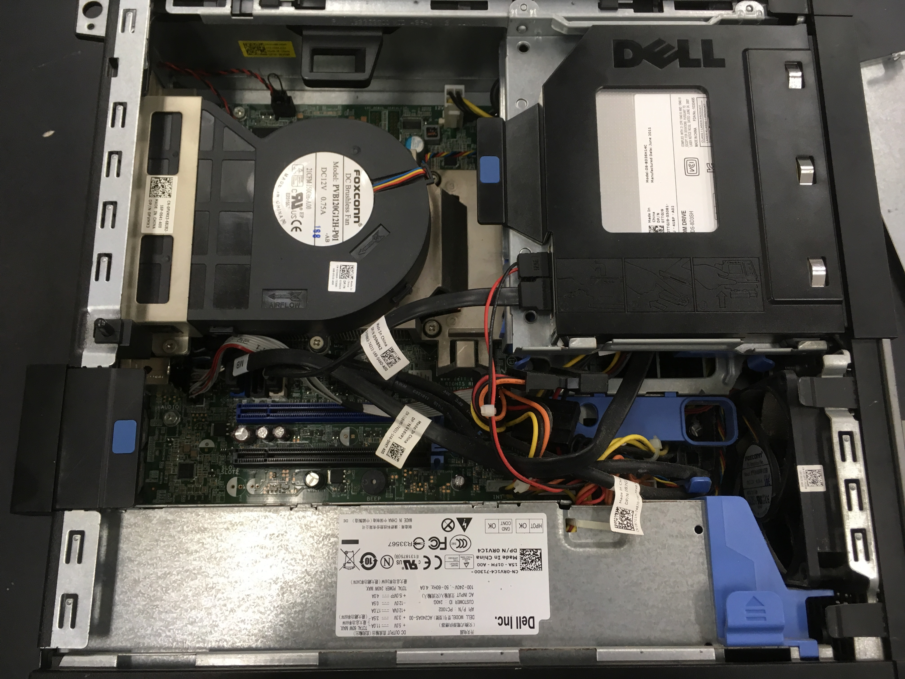
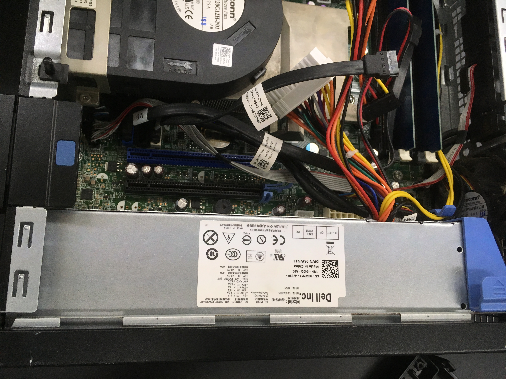

DELL OPTIPLEX 780手術
DELLのパソコンが動かない!
物理部では、私物のノートパソコン等を持ち込んで作業ができない場合、部活にあるパソコンを貸し出して使うことがあります。
PC班員が作業をするときは、持ち込むか借りるかの二択で、部活のPCは文化祭の展示でも使われるものになります。
部活のPCの中に、DELLのOPTIPLEX780があるのですが、それがある日突然電源がつかなくなってしまいました。

電源ボタンを押しなおしたり、電源ケーブルを押し直したりしても動かないので、電源が壊れているという判断に至りました。
変な電源
替えの電源に交換すればいいのですが、組み込まれていた電源が見慣れない形のものでした。よく見るATX電源などではなく、小さな筐体に収まるように独自に設計されたもののようで、物理部内に替えの電源がなかったのです。
「DELL 電源」とAmazonで検索したら、意外と簡単に見つかりました。3000円くらいで安かったので、すぐに買うことになりました。
電源到着、そして交換
暫く待っていたらAmazonから電源が届きました。

日本の倉庫から発送されるのかと思っていたのですが、中国語の伝票が張り付いて届いたので驚きました。深センの業者から香港国際空港→成田空港と飛んできたようです。
一部モザイクを掛けておきました。不必要なところにもかかっているかもしれませんが...
中にすごく潰れやすいプチプチが入っていました。雑巾絞りでブヂブヂブヂッってやるの楽しかった。
上のが新しい電源です。古い電源はアルミの表面が錆びているみたいです。きれいになってよかった。ついでにPCの中のほこりも拭き取っておきました。
 換装前と換装後ではこんな感じ。見た目上ではきれいになって以外に特に変わりはないですが。狭い筐体に配線、CPUファン、HDD、DVDドライブなどを詰め込んでいるせいで色々外さないと配線し直すことができなかったので非常に面倒でした。
その後
蓋をしめて、電源ケーブルをさしたらちゃんと起動しました。よかった。
このブログを書いている日に、新しく別のPCのOSが起動しなくなったのは内緒。
それでは、最後まで読んでいただきありがとうございました。他の記事もぜひ読んでいってくださいね。